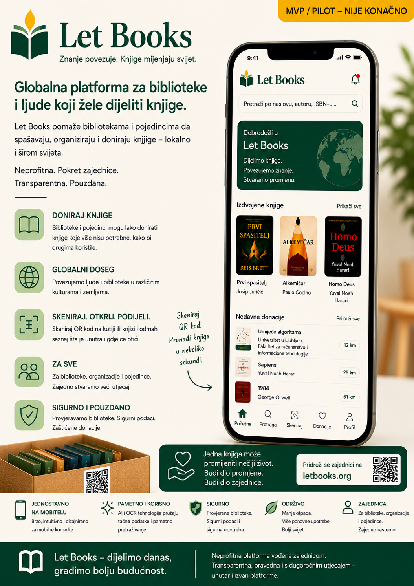

Napomena o ranoj alfa fazi
Dokumentacija, makete i opisani tokovi rada još su u ranoj alfa fazi. Sadržaj je AI-potpomognut i može sadržavati netačnosti, privremene detalje ili buduće smjerove razvoja.
Let Books pomaže ljudima, bibliotekama i budućim organizacijama domaćinima da popišu vrijedne knjige, pregledaju donacije i kasnije pronađu tačne primjerke koji su traženi.

Dokumentacija, makete i opisani tokovi rada još su u ranoj alfa fazi. Sadržaj je AI-potpomognut i može sadržavati netačnosti, privremene detalje ili buduće smjerove razvoja.
Jedan naslov može imati više fizičkih primjeraka, svaki sa svojim stanjem, lokacijom i ishodom donacije.
Skenirajte kutiju, vidite sadržaj, brzo dodajte knjige i kasnije pripremite preuzimanje bez nagađanja.
Izvezite listu, prikupite odluke želi ili možda, vratite ih nazad i napravite listu preuzimanja po lokacijama.
Odaberite nekoliko konkretnih ulaznih tačaka iz bloga, materijala za učenje i wiki stranica.
Zašto AI-potpomognuti radni tokovi trebaju eksplicitne granice povjerenja, autorizaciju izvan AI-zaključivanja, upravljane integracije i trajan pregled.
Materijali za učenjeOvaj vodič objašnjava kako napisati specifikaciju proizvoda ili funkcionalnosti koja pomaže da implementacija uz podršku AI-ja ostane usklađena sa stvarnim ciljevima proizvoda umjesto da odluta prema generičkom rezultatu.
WikiSpecifikacija proizvoda određuje čemu proizvod služi, šta mora raditi, koje granice mora poštovati i koji se rezultati smatraju uspjehom.
TemeZašto su bibliografsko izdanje i pojedinačno pohranjena knjiga povezani entiteti, ali ih ne treba tretirati kao isti zapis.